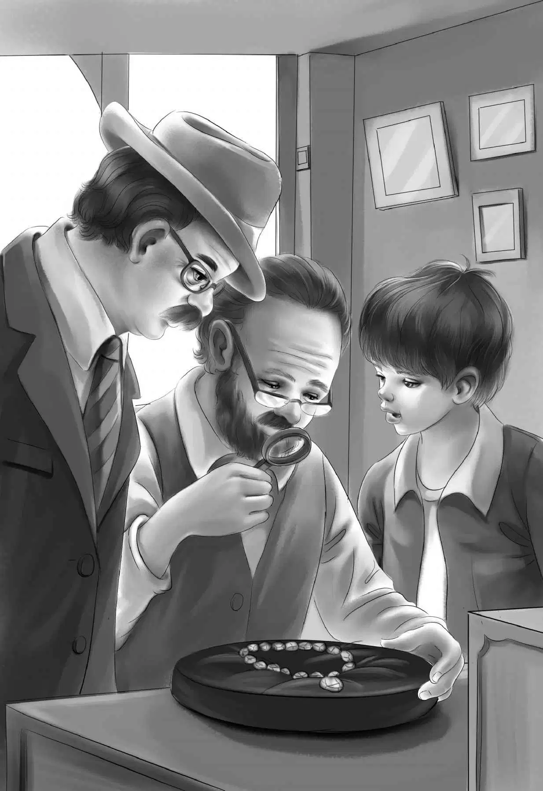

Mr. Alden kept the necklace in his pocket. Next morning， after the housework was done， the train began to slow down. It went clacking onto a siding and came to a stop. The Aldens went down the steps， and there was Al.
Al called to them， “You have two hours here， Mr. Alden. We have to turn the train around. This is the end of the run. Be ready to go back in two hours.”
Mr. Alden asked， “Do you know of a good jewelry store？”
“Yes， right over there on Main Street，” said Al. “We pass it when we eat lunch at the Golden Horn. Maybe you’d like to eat lunch there， too.”
Mr. Alden said， “Come nearer， Al. Look at this.” Mr. Alden held up the sparkling necklace.
“Chi-Chi’s diamonds！” said Al. “Where in the world did you find them？”
“In my mattress，” said Benny. “Jessie was mending it， and there they were.”
“I’ll tell the crew，” said Al. “Oh， will they ever be surprised！I’ll tell them this minute. I have to go now anyway.”
He rushed off. The Aldens went along Main Street. “What an adventure！It seems strange to see sidewalks and stores again，” said Benny.
Jessie said， “Isn’t that the Golden Horn way up the street？”
“Yes，” said Henry. “I can see it. And the jewelry store is on this side.”
Mr. Alden looked at the sign. “Oh， I know all about that store，” he said. “It is famous. We can trust them to tell us the truth.”
In a few minutes the Aldens went into the store. Mr. Alden went over to a gray-haired man behind a counter.
“How do you do. My name is James Alden. My grandchildren have found a lost article. We know who lost it， but we would like to know how much it is worth.”
The gentleman smiled. He expected to see a ring or a pin. He took one glance at the necklace and then looked up. “Well， sir！” he said. “Do you know what you have here？”
“Well， I have some idea，” said Mr. Alden， smiling.
The man called to another man， “Come here a minute.”
When Mr. Alden put the necklace on the black velvet tray， the second man whistled. He sat down and began to look at the diamonds through a magnifying glass. It took a long time.
Jessie thought， “Will he never tell us？”
At last he took the glass from his eye and said， “Mr. Alden， every stone is a real diamond， and every one is perfect. But the ruby is the best of all. It is a very fine one.”
“How much is the necklace worth？” asked Grandfather.
“I wouldn’t want to say，” said the man. “I would need more time.”
Benny spoke up. “Well， could a single man buy a horse and support himself and the horse for a year？”

The man laughed. “Yes， I think so.”
“That’s just what I wanted to know，” said Grandfather. He put the necklace back in his pocket. Then he said， “And now we’d like to buy a knife.”
“A knife！” exclaimed the man. He thought that Mr. Alden must want to buy a knife for himself. He took out some beautiful silver pocketknives.
“Oh， no，” said Mr. Alden. “I should have told you. We want to buy a knife for a nine-year-old boy. But it must be a strong knife that will fit a boy fourteen years old. Right， Benny？”
“Yes，” said Benny. “This boy lives in the woods， and he cuts vines and everything.”
The jeweler smiled. “Right over here，” he said. “These are all boys’ knives. Here is one with all sorts of things in it. Two blades， and a screwdriver—”
“A can opener，” said Benny， “and a leather punch. It couldn’t be better， Grandfather！Charley will certainly like that one. I can hardly wait to see his face when he opens it.”
Mr. Alden paid the man and gave him a card. The man looked at it and said， “Don’t I know you？I know the James Alden Library and the James Alden Museum. Are you that James Alden？”
“Well， I suppose I am. We all thank you very much.”
When the Aldens were outside， Henry said， “He was surprised about the knife. First a diamond necklace and then a boy’s jackknife！”
“Oh， I’m hungry，” said Benny， “and here’s the Golden Horn.”
The other Aldens didn’t laugh this time， for they were hungry， too. They all went into the restaurant.
“I’m going to have a pizza，” said Jessie.
“So am I，” agreed Violet. “We haven’t had a pizza for weeks and weeks.”
Everyone wanted a pizza. Soon the pies came， hot and bubbling. The tomato sauce was thick with cheese. When lunch was over，Henry said， “We’d better go back to the caboose now.”
When they reached the caboose， the whole train had been turned around. They climbed the steps of Number 777.
This time Al walked down on the top of the cars to see if Benny was aboard.
“It’s all right， Al，” called Benny. “I’m here this time. I try not to make the same mistake twice.”
“That’s a fine idea，” said Al. “It won’t take as long to get home as the trip out. It never does. We have more empty boxcars and not so much freight. But we do have to stop at Glass Factory Junction and Pinedale. You can see your friends then. Are you all ready， Mr. Alden？”
Mr. Alden laughed. “Yes， we are ready. We have many things to do before we stop anywhere.”
“I can believe that. You folks would always think up something to do. That’s sure. So here we go！”
In a minute the train began to move slowly toward home.